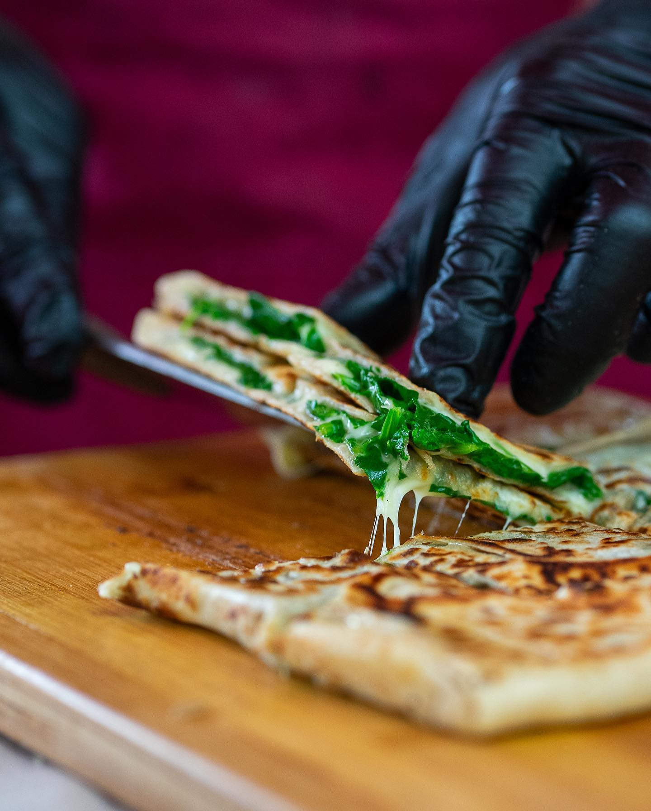
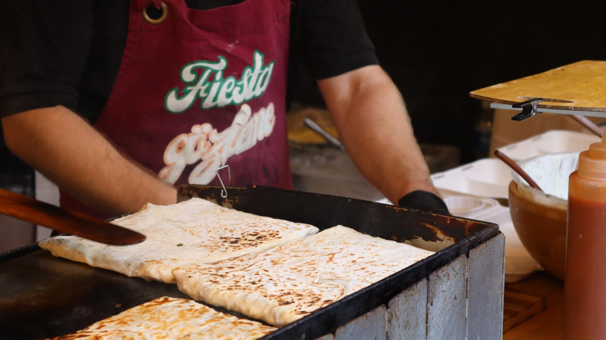
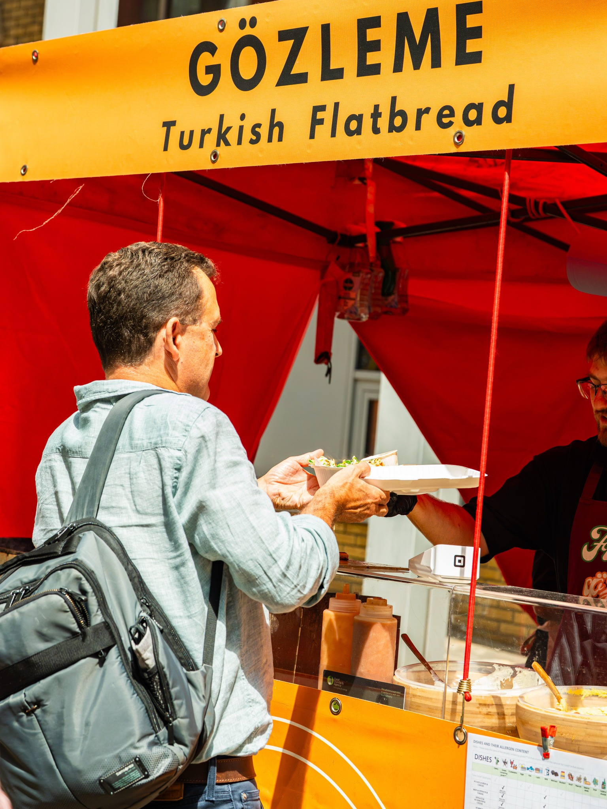
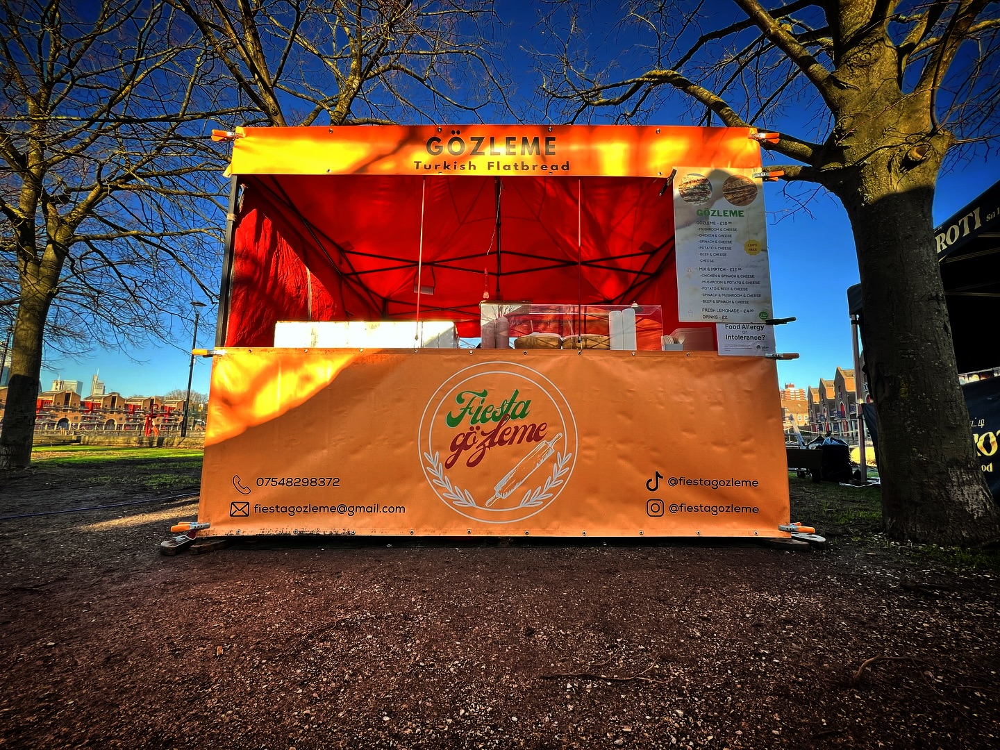
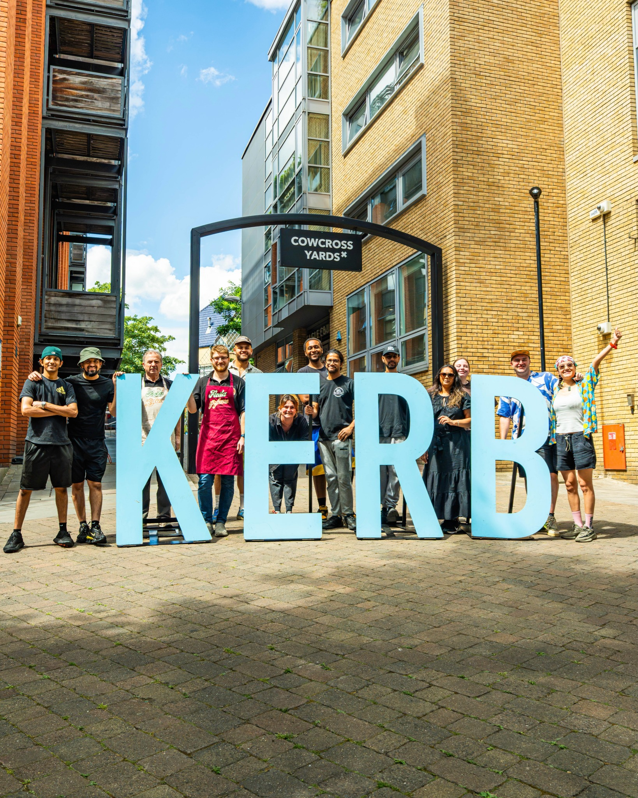
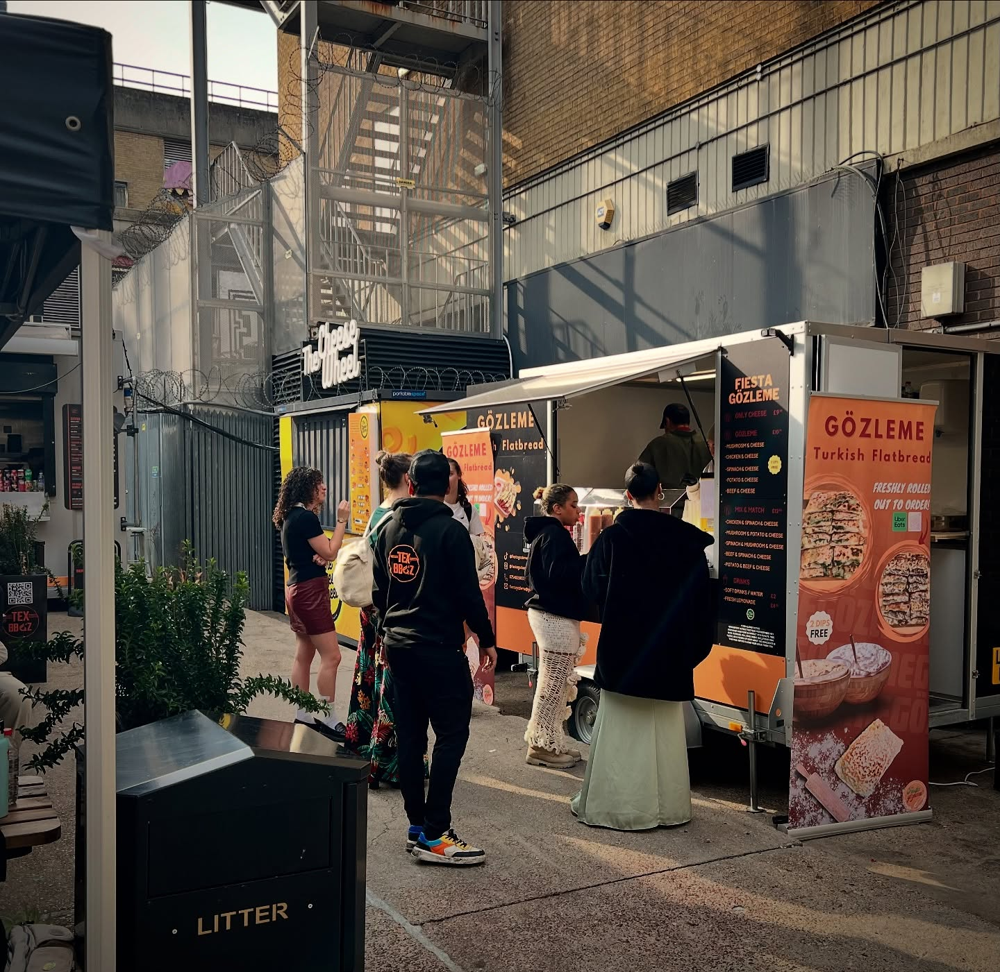
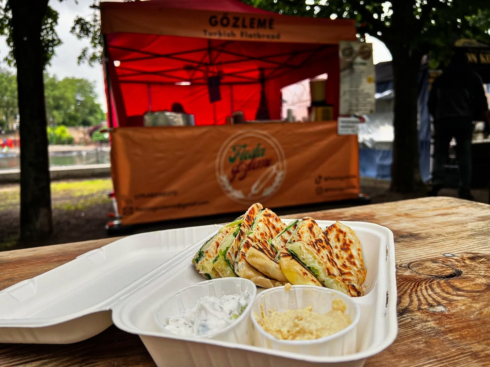

Simply
cheesy.
Only cheese. Melty, comforting and golden from the griddle.
FIESTA GÖZLEME® · TURKISH STREET FOOD
Freshly made. Happily served.
Hand-rolled gözleme, generous fillings and one very happy lunch break.

FRESH NEWS FROM FIESTA
For our latest market announcements, visit @fiestagozleme on Instagram ↗

THE FAMILY BEHIND YOUR FAVOURITE
After moving to the UK in 2021, Faik and his family set out to share one of Türkiye’s best-loved street foods. With years of hospitality experience behind him, he turned that love of good food into Fiesta Gözleme.
Rather than building a huge menu, we focus on doing one thing brilliantly. Every flatbread is made fresh to order, folded, filled and cooked until golden.
Best enjoyed straight off the griddle, with a proper cheese pull—and a warm welcome.
Meet Fiesta on KERB →FOLLOW THE FLAVOUR
Weekday lunch breaks and weekend wanders. Find your next freshly made gözleme across London and Oxford.
1 Fleet Place, London
Confirmed Fiesta dates · 2026
Odyssey Way, Wandsworth, London
Confirmed Fiesta dates · 2026
A TASTE OF MARKET LIFE
Hot griddles, colourful stalls and good food shared. A few moments from our days at the markets.





FOOD QUESTIONS? MARKET PLANS?
Questions about our food, a market visit or an event?
We'd love to hear from you.